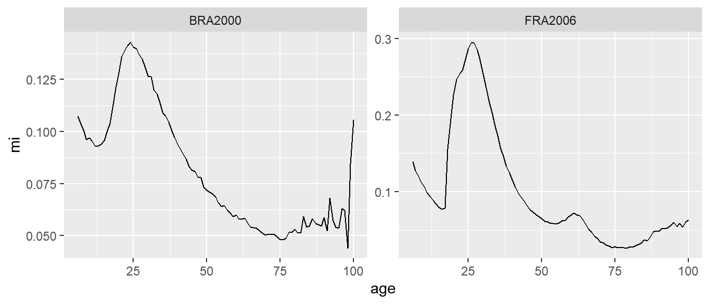

Chapter 11 Age Indices
11.1 .
11.1.1 Age Indices
- Number of criticisms of model age schedules for migration (Bell et al. (2002), Bernard, Bell, and Charles-Edwards (2014))
- Not always clear how many parameters should be included in model schedule
- Parameter estimates sensitive to the choice of model form, making comparisons difficult
- Use statistical accuracy measures to select best form, at the risk of over fitting
- Parameter estimates sensitive to initial values
- Unlikely to be the case when using
mig_estimate_rc()
- Unlikely to be the case when using
- Unstable parameter estimates
- Sensitive to measurement error in age-specific migration
- Interpretation of parameter estimates
- The indexes in
index_age_rc()have not been widely adopted, probably because of difficulty in fitting model schedules.
- The indexes in
11.1.2 Age Indices
- A number of other measures of age specific migration have been proposed that do not require fitting model age schedules.
- Most a dependent on the migration intensity \(m_{as}\), the number of migrants in a age group and given time period as a percentage of the population at risk of moving.
- Rogers (1975) proposed a Gross Migraproduction Rate (GMR) based on the sum of age-specific (and sex-specific) migration intensities \[ GMR = \sum_{as} m_{as} \]
- Bell et al. (2002) introduced
- Peak migration intensity, the largest age-specific migration intensity of any age-group
- Peak age, the corresponding age of the peak migration intensity
11.1.3 Age Indices
- Bell and Muhidin (2009) proposed and additional measures
- Breadth of peak based on the sum of the peak migration intensity at the peak age and the five age-groups before and after the peak.
- Peak share based on the percentage of the normalized migration age schedule covered by the peak age and the five age-groups before and after the peak.
- Bernard, Bell, and Charles-Edwards (2014) provide three additioanl measures
- The Maximum Upward Rate of Change (MURC) for the largest gradient in the slope of the labour force peak before the peak age
- The Maximum Downward Rate of Change (MDRC) for the largest gradient in the slope of the labour force peak after the peak age
- The asymmetry of the labour force peak based on the ratio of MURC and MDRC
- Each of these measures area calculated in the
age_index()function in the migest package
11.1.4 Age Indices
- To demonstrate we use the age schedule data of Brazil 2000 and France 2006 in the
ipumsi_agedata frame of the migest package- Migration based on five-year transitions between any minor (and major) administrative units.
ipumsi_age %>%
mutate(mi = migrants/population) %>%
filter(age > 5) %>%
ggplot(mapping = aes(x = age, y = mi)) +
geom_line() +
facet_wrap(facets = "sample", scales = "free")
11.1.5 Age Indices
- Bernard, Bell, and Charles-Edwards (2014) recommends smoothing age schedules before calculating index values
- Get very similar results without smoothing - at least in these examples
index_age()by default ignores values above 65 (and below 5) when calculating peak index statistics
- GMR still sensitive for outliers (e.g. oldest in Brazil)
- Index values for Brazil 2000
ipumsi_age %>%
filter(sample == "BRA2000") %>%
mutate(mi = migrants/population) %>%
index_age()## # A tibble: 8 x 2
## measure value
## <chr> <dbl>
## 1 gmr 7.82
## 2 peak_mi 14.3
## 3 peak_age 24
## 4 peak_breadth 147.
## 5 peak_share 18.8
## 6 murc 19
## 7 mdrc 32
## 8 asymmetry 0.59411.1.6 Age Indices
- Index values are most useful for comparing age-specific migration in different countries (or regions or time periods)
ipumsi_age %>%
group_by(sample) %>%
mutate(mi = migrants/population) %>%
index_age() %>%
pivot_wider(names_from = sample, values_from = value)## # A tibble: 8 x 3
## measure BRA2000 FRA2006
## <chr> <dbl> <dbl>
## 1 gmr 7.82 9.55
## 2 peak_mi 14.3 29.5
## 3 peak_age 24 26
## 4 peak_breadth 147. 295.
## 5 peak_share 18.8 30.8
## 6 murc 19 18
## 7 mdrc 32 30
## 8 asymmetry 0.594 0.6References
Bell, Martin, Marcus Blake, Paul Boyle, O. Duke-Williams, Philip H. Rees, John Stillwell, and Graeme John Hugo. 2002. “Cross-national comparison of internal migration: issues and measures.” Journal of the Royal Statistical Society: Series A (Statistics in Society) 165 (3): 435–64. https://doi.org/10.1111/1467-985X.00247.
Bell, Martin, and Salut Muhidin. 2009. “Cross-National Comparisons of Internal Migration.” Human Development Reports. United Nations Development Programme.
Bernard, Aude, Martin Bell, and Elin Charles-Edwards. 2014. “Improved measures for the cross-national comparison of age profiles of internal migration.” Population Studies 68 (2): 179–95. https://doi.org/10.1080/00324728.2014.890243.
Rogers, Andrei. 1975. Introduction to Multiregional Mathematical Demography. New York, New York, USA: Wiley.